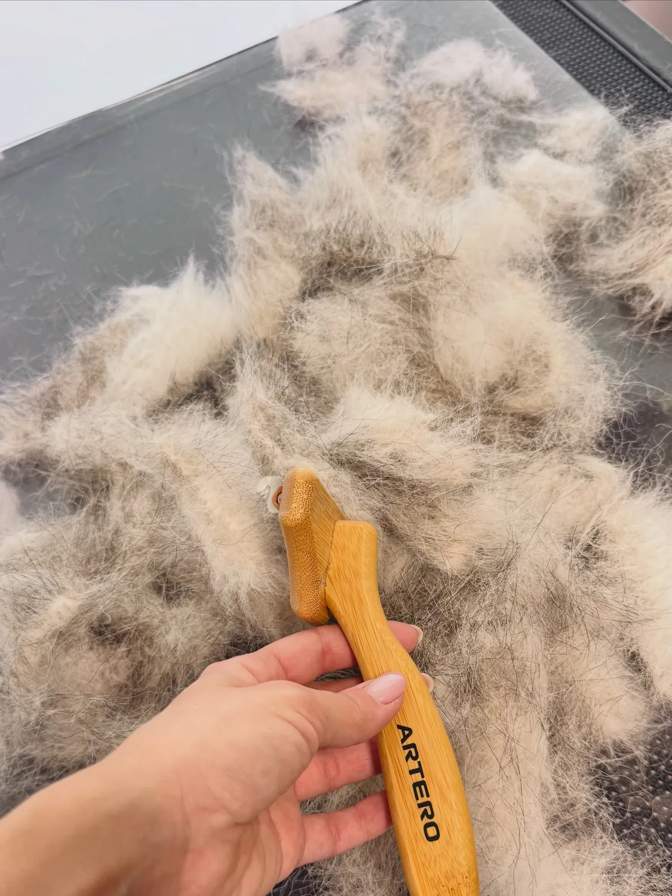
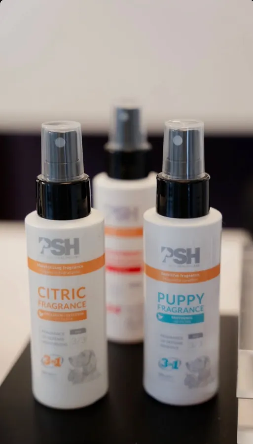

Más que un corte,
es amor y cuidado.
Peluquería canina con Shadia: corte a tijera, deslanado, stripping y baño de ozono. Atendemos uno a uno, sin jaulas y sin prisas, con todo el tiempo que tu perro necesita.
- 9
- cuidados
a su medida - 1:1
- atención
individual - 5,0
- en Google
· 208 opiniones


Nueve cuidados,
un mismo cariño.
Todos se hacen con cita previa y a su ritmo. Entra en cada uno para ver cómo lo hacemos, qué incluye y a qué perros va dirigido.
Ver todos los servicios- 01
 Corte a tijeraUn corte pensado para su manto, su personalidad y vuestra vida juntos.Estilismo
Corte a tijeraUn corte pensado para su manto, su personalidad y vuestra vida juntos.Estilismo - 02
 StrippingTrabajo manual para respetar la textura natural del manto.Estilismo
StrippingTrabajo manual para respetar la textura natural del manto.Estilismo - 03

DeslanadoRetiramos el subpelo suelto respetando la estructura del manto.Manto e higiene - 04
 Baño de ozonoUna opción de cuidado complementario, siempre adaptada a su piel.Piel y bienestar
Baño de ozonoUna opción de cuidado complementario, siempre adaptada a su piel.Piel y bienestar - 05
 DermocosméticaCosmética canina elegida para su piel, su pelo y su rutina.Piel y bienestar
DermocosméticaCosmética canina elegida para su piel, su pelo y su rutina.Piel y bienestar - 06Baño y cuidado del mantoBaño, secado y cepillado con atención a los pequeños detalles.Manto e higiene
- 07
 Corte de uñasRevisión y corte cuidadoso, respetando sus límites.Manto e higiene
Corte de uñasRevisión y corte cuidadoso, respetando sus límites.Manto e higiene - 08
 Alimentación especializadaOpciones de alimentación y una conversación para elegir con criterio.En casa
Alimentación especializadaOpciones de alimentación y una conversación para elegir con criterio.En casa - 09
 AsesoramientoConsejos prácticos de cepillado, cosmética y mantenimiento.En casa
AsesoramientoConsejos prácticos de cepillado, cosmética y mantenimiento.En casa


Aquí se viene
a estar a gusto.
Una buena peluquería canina no es solo que salgan guapos… también es cuidar de su bienestar durante todo el proceso.
- 01
Atención uno a uno
Trabajamos con un solo perro cada vez para dedicarle toda la atención.
- 02
Sin jaulas, sin prisas
No hay jaulas de espera y reservamos el tiempo que cada manto necesita.
- 03
Orejeras en el secado
Protegemos sus oídos del ruido del secador cuando lo necesitan.
- 04
Para todos los tamaños
Bañera de acero inoxidable adaptada a razas gigantes: desde un maltés hasta un San Bernardo.
El cambio
se nota.
Desliza cada foto para comparar. Son sesiones reales en el salón: sin filtros y sin retoques.

 AntesDespués
AntesDespuésLas tarjetas con huellas son plantillas: cuando Shadia pase más pares de fotos reales, ocuparán su lugar.
El cariño se nota.
Y se cuenta.
Reseñas de familias que repiten: unas de Google, otras de las historias de Instagram y de Páxinas Galegas.
«Trato inmejorable. Tanto con los peludos como con los clientes. Mi perrita ha salido, a parte de preciosa, encantada con los mimos recibidos en Pelucans. Sin duda volveremos.»
«Maravillosa y muy bien de precio, la atención genial y el trato con los peludos exquisito. Lleva atendiendo a mis perros unos años y siempre un 10.»
«Hoy Jagger, mi pastor alemán, hizo uso de los servicios de Pelucans y salió muy satisfecho, al igual que yo. Bonitas y cuidadas instalaciones, trato exquisito y buenos precios.»
Un día en Pelucans.
Los destacados y reels de su Instagram, sin salir de la web. Pulsa un círculo para recorrerlo o un reel para verlo con sonido.
Seguir en InstagramPara casa, para el paseo,
para la lluvia.
Cosmética PSH y Artero, juguetes KONG, arneses con diseño y chubasqueros reversibles. Consulta stock y precios en su catálogo de WhatsApp. También somos punto de recogida Vinted Go.


Te esperamos en
A Laracha.
Avenida Doutor López Astray, 40. Siempre con cita previa y con sitio para aparcar.
Cuándo venir Horario
16:00–19:00
Parking cerca de la puerta. Punto Vinted Go.

Nos encantará conocer a tu peludo.
Cuéntanos cómo es, qué le gusta y qué necesita. Del resto nos encargamos nosotros, con calma.